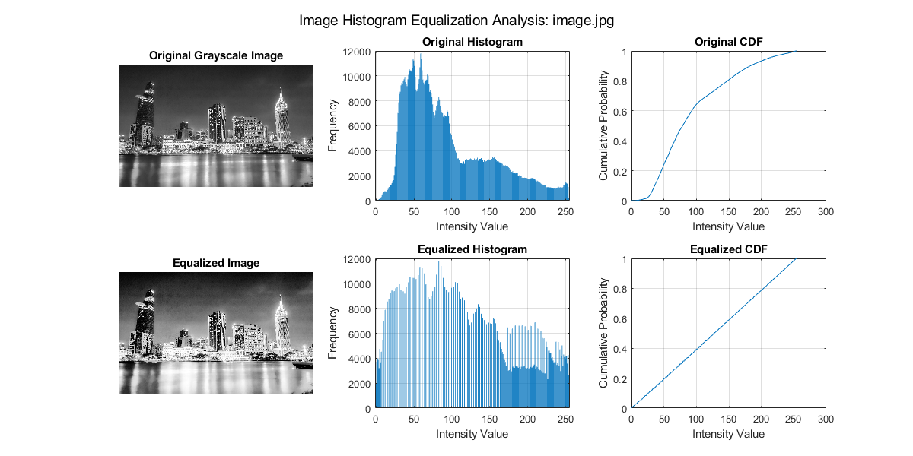

clear all
close all
clc
[filename, pathname] = uigetfile({'*.jpg;*.png;*.bmp;*.tif', 'Image Files (*.jpg,*.png,*.bmp,*.tif)';
'*.*', 'All Files (*.*)'}, ...
'Select an Image File');
if filename == 0
disp('User canceled file selection');
return;
end
img = imread(fullfile(pathname, filename));
if size(img, 3) == 3
gray_img = rgb2gray(img);
else
gray_img = img;
end
[counts, bins] = histcounts(gray_img(:), 256);
cdf = cumsum(counts) / numel(gray_img);
cdf_min = min(cdf(cdf > 0));
lookup_table = uint8(round((cdf - cdf_min) / (1 - cdf_min) * 255));
equalized_img = lookup_table(gray_img + 1);
figure('Position', [100 100 1200 600]);
subplot(2, 3, 1);
imshow(gray_img);
title('Original Grayscale Image');
subplot(2, 3, 2);
bar(bins(1:end-1), counts);
title('Original Histogram');
xlabel('Intensity Value');
ylabel('Frequency');
grid on;
subplot(2, 3, 3);
plot(bins(1:end-1), cdf);
title('Original CDF');
xlabel('Intensity Value');
ylabel('Cumulative Probability');
grid on;
subplot(2, 3, 4);
imshow(equalized_img);
title('Equalized Image');
[eq_counts, eq_bins] = histcounts(equalized_img(:), 256);
subplot(2, 3, 5);
bar(eq_bins(1:end-1), eq_counts);
title('Equalized Histogram');
xlabel('Intensity Value');
ylabel('Frequency');
grid on;
eq_cdf = cumsum(eq_counts) / numel(equalized_img);
subplot(2, 3, 6);
plot(eq_bins(1:end-1), eq_cdf);
title('Equalized CDF');
xlabel('Intensity Value');
ylabel('Cumulative Probability');
grid on;
sgtitle(['Image Histogram Equalization Analysis: ' filename]);
